OCCCCOMain-article source-shown cis/trans THF routes, feed preparations and isolated exploratory products. Allene axial configurations require separate metadata; mixtures and aggregate yields retain source scope. SI contains spectra only. Facts compiled deterministically; independent review pending.
完整 JSON · 逐步 CSV · 路线序列 · SDF · HRMS 核对
| 事件 | 分子连接 | 报告产率 | Canonical reaction SMILES |
|---|---|---|---|
| A01 | 8 → 9 | 9: 90% | OCCCCO>>CC(C)(C)[Si](C)(C)OCCCCO |
| A02 | 9 + 10 → 11 | 11: 77% | CC(C)(C)[Si](C)(C)OCCCCO.CCOC(=O)CC(=O)O>>CCOC(=O)C/C=C/CCO[Si](C)(C)C(C)(C)C |
| A03 | 11 → 12 | 12: 78% | CCOC(=O)C/C=C/CCO[Si](C)(C)C(C)(C)C>>CC(C)(C)[Si](C)(C)OCC[C@H]1OC(=O)C[C@H]1O |
| A04 | 12 → 7 | 7: 90% | CC(C)(C)[Si](C)(C)OCC[C@H]1OC(=O)C[C@H]1O>>CC(C)(C)[Si](C)(C)OCC[C@H]1OC(=O)C[C@H]1O[Si](C)(C)C(C)(C)C |
| F01 | propargyl alcohol → 13 | 13: 45% | C#CCO>>C[Si](C)(C)C#CC[P+](c1ccccc1)(c1ccccc1)c1ccccc1.[Br-] |
| A05 | 7 + 13 → 14a + 14b | 14a: 52%; 14b: 14% | CC(C)(C)[Si](C)(C)OCC[C@H]1OC(=O)C[C@H]1O[Si](C)(C)C(C)(C)C.C[Si](C)(C)C#CC[P+](c1ccccc1)(c1ccccc1)c1ccccc1.[Br-]>>CC(C)(C)[Si](C)(C)OCC[C@@H](O)[C@@H](C/C=C/C#C[Si](C)(C)C)O[Si](C)(C)C(C)(C)C.CC(C)(C)[Si](C)(C)OCC[C@@H](O)[C@@H](C/C=C\C#C[Si](C)(C)C)O[Si](C)(C)C(C)(C)C |
| A06 | 14a → 6a | 6a: 93% | CC(C)(C)[Si](C)(C)OCC[C@@H](O)[C@@H](C/C=C/C#C[Si](C)(C)C)O[Si](C)(C)C(C)(C)C>>C#C/C=C/C[C@@H](O[Si](C)(C)C(C)(C)C)[C@H](O)CCO[Si](C)(C)C(C)(C)C |
| A07 | 14b → 6b | 6b: 92% | CC(C)(C)[Si](C)(C)OCC[C@@H](O)[C@@H](C/C=C\C#C[Si](C)(C)C)O[Si](C)(C)C(C)(C)C>>C#C/C=C\C[C@@H](O[Si](C)(C)C(C)(C)C)[C@H](O)CCO[Si](C)(C)C(C)(C)C |
| B01 | 6a → 5a + 5a' | not reported | C#C/C=C/C[C@@H](O[Si](C)(C)C(C)(C)C)[C@H](O)CCO[Si](C)(C)C(C)(C)C>>CC(C)(C)[Si](C)(C)OCC[C@H]1O[C@@H](C=C=CBr)C[C@H]1O[Si](C)(C)C(C)(C)C.CC(C)(C)[Si](C)(C)OCC[C@H]1O[C@@H](C=C=CBr)C[C@H]1O[Si](C)(C)C(C)(C)C |
| B02 | 6a → 5a + 5a' | not reported | C#C/C=C/C[C@@H](O[Si](C)(C)C(C)(C)C)[C@H](O)CCO[Si](C)(C)C(C)(C)C>>CC(C)(C)[Si](C)(C)OCC[C@H]1O[C@@H](C=C=CBr)C[C@H]1O[Si](C)(C)C(C)(C)C.CC(C)(C)[Si](C)(C)OCC[C@H]1O[C@@H](C=C=CBr)C[C@H]1O[Si](C)(C)C(C)(C)C |
| B03 | 6a → 5a + 5a' | not reported | C#C/C=C/C[C@@H](O[Si](C)(C)C(C)(C)C)[C@H](O)CCO[Si](C)(C)C(C)(C)C>>CC(C)(C)[Si](C)(C)OCC[C@H]1O[C@@H](C=C=CBr)C[C@H]1O[Si](C)(C)C(C)(C)C.CC(C)(C)[Si](C)(C)OCC[C@H]1O[C@@H](C=C=CBr)C[C@H]1O[Si](C)(C)C(C)(C)C |
| B04 | 6a → 5a + 5a' | not reported | C#C/C=C/C[C@@H](O[Si](C)(C)C(C)(C)C)[C@H](O)CCO[Si](C)(C)C(C)(C)C>>CC(C)(C)[Si](C)(C)OCC[C@H]1O[C@@H](C=C=CBr)C[C@H]1O[Si](C)(C)C(C)(C)C.CC(C)(C)[Si](C)(C)OCC[C@H]1O[C@@H](C=C=CBr)C[C@H]1O[Si](C)(C)C(C)(C)C |
| B05 | 6a → 5a + 5a' | not reported | C#C/C=C/C[C@@H](O[Si](C)(C)C(C)(C)C)[C@H](O)CCO[Si](C)(C)C(C)(C)C>>CC(C)(C)[Si](C)(C)OCC[C@H]1O[C@@H](C=C=CBr)C[C@H]1O[Si](C)(C)C(C)(C)C.CC(C)(C)[Si](C)(C)OCC[C@H]1O[C@@H](C=C=CBr)C[C@H]1O[Si](C)(C)C(C)(C)C |
| B06 | 5a + 5a' → 15a + 15b | 15a: 65%; 15b: 21% | CC(C)(C)[Si](C)(C)OCC[C@H]1O[C@@H](C=C=CBr)C[C@H]1O[Si](C)(C)C(C)(C)C.CC(C)(C)[Si](C)(C)OCC[C@H]1O[C@@H](C=C=CBr)C[C@H]1O[Si](C)(C)C(C)(C)C>>OCC[C@H]1O[C@@H](C=C=CBr)C[C@H]1O.OCC[C@H]1O[C@@H](C=C=CBr)C[C@H]1O |
| F02 | (E)-1-bromohex-3-ene → hex-3-enyl phosphonium bromide | hex-3-enyl phosphonium bromide: 72% | CC/C=C/CCBr>>CC/C=C/CC[P+](c1ccccc1)(c1ccccc1)c1ccccc1.[Br-] |
| B07 | 15a + hex-3-enyl phosphonium bromide → 16a | 16a: 72% | CC/C=C/CC[P+](c1ccccc1)(c1ccccc1)c1ccccc1.OCC[C@H]1O[C@@H](C=C=CBr)C[C@H]1O.[Br-]>>CC/C=C/C/C=C\C[C@H]1O[C@@H](C=C=CBr)C[C@H]1O |
| B08 | 15b + hex-3-enyl phosphonium bromide → 16b | 16b: 70% | CC/C=C/CC[P+](c1ccccc1)(c1ccccc1)c1ccccc1.OCC[C@H]1O[C@@H](C=C=CBr)C[C@H]1O.[Br-]>>CC/C=C/C/C=C\C[C@H]1O[C@@H](C=C=CBr)C[C@H]1O |
| B09 | 16a → 2a | 2a: 80% | CC/C=C/C/C=C\C[C@H]1O[C@@H](C=C=CBr)C[C@H]1O>>CC/C=C/C/C=C\C[C@H]1O[C@@H](C=C=CBr)C[C@H]1OC(C)=O |
| B10 | 16b → 2a' | 2a': 82% | CC/C=C/C/C=C\C[C@H]1O[C@@H](C=C=CBr)C[C@H]1O>>CC/C=C/C/C=C\C[C@H]1O[C@@H](C=C=CBr)C[C@H]1OC(C)=O |
| C15 | 27a → 2b | 2b: 88% | CC/C=C/C/C=C\C[C@H]1O[C@H](C=C=CBr)C[C@H]1O>>CC/C=C/C/C=C\C[C@H]1O[C@H](C=C=CBr)C[C@H]1OC(C)=O |
| C16 | 27b → 2b' | 2b': 84% | CC/C=C/C/C=C\C[C@H]1O[C@H](C=C=CBr)C[C@H]1O>>CC/C=C/C/C=C\C[C@H]1O[C@H](C=C=CBr)C[C@H]1OC(C)=O |
| C01 | 12 + ethyl triphenylphosphoranylidene acetate → 17 | 17: 70% | CC(C)(C)[Si](C)(C)OCC[C@H]1OC(=O)C[C@H]1O.CCOC(=O)C=P(c1ccccc1)(c1ccccc1)c1ccccc1>>CCOC(=O)/C=C/C[C@@H](O)[C@H](O)CCO[Si](C)(C)C(C)(C)C |
| C02 | 17 → 18 | 18: 86% | CCOC(=O)/C=C/C[C@@H](O)[C@H](O)CCO[Si](C)(C)C(C)(C)C>>CC(C)(C)[Si](C)(C)OCC[C@@H](O)[C@H](O)C/C=C/CO |
| C03 | 18 → 19 | 19: 88% | CC(C)(C)[Si](C)(C)OCC[C@@H](O)[C@H](O)C/C=C/CO>>CC(=O)OC/C=C/C[C@@H](O)[C@H](O)CCO[Si](C)(C)C(C)(C)C |
| C04 | 19 → 20 | 20: 92% | CC(=O)OC/C=C/C[C@@H](O)[C@H](O)CCO[Si](C)(C)C(C)(C)C>>C=C[C@@H]1C[C@@H](O)[C@@H](CCO[Si](C)(C)C(C)(C)C)O1 |
| C05 | 20 → 21 | 21: 92% | C=C[C@@H]1C[C@@H](O)[C@@H](CCO[Si](C)(C)C(C)(C)C)O1>>C=C[C@@H]1C[C@@H](O[Si](C)(C)C(C)(C)C)[C@@H](CCO[Si](C)(C)C(C)(C)C)O1 |
| C06 | 21 + ethynylmagnesium bromide → 22 | 22: 85% | C#[C][Mg][Br].C=C[C@@H]1C[C@@H](O[Si](C)(C)C(C)(C)C)[C@@H](CCO[Si](C)(C)C(C)(C)C)O1>>C#CC(O)[C@@H]1C[C@@H](O[Si](C)(C)C(C)(C)C)[C@@H](CCO[Si](C)(C)C(C)(C)C)O1 |
| C07 | 22 → 23 | 23: 94% | C#CC(O)[C@@H]1C[C@@H](O[Si](C)(C)C(C)(C)C)[C@@H](CCO[Si](C)(C)C(C)(C)C)O1>>C#CC(OS(=O)(=O)c1c(C(C)C)cc(C(C)C)cc1C(C)C)[C@@H]1C[C@@H](O[Si](C)(C)C(C)(C)C)[C@@H](CCO[Si](C)(C)C(C)(C)C)O1 |
| C11 | 22a → 23a | 23a: 94% | C#CC(O)[C@@H]1C[C@@H](O[Si](C)(C)C(C)(C)C)[C@@H](CCO[Si](C)(C)C(C)(C)C)O1>>C#CC(OS(=O)(=O)c1c(C(C)C)cc(C(C)C)cc1C(C)C)[C@@H]1C[C@@H](O[Si](C)(C)C(C)(C)C)[C@@H](CCO[Si](C)(C)C(C)(C)C)O1 |
| C08 | 23 → 24 | 24: 88% | C#CC(OS(=O)(=O)c1c(C(C)C)cc(C(C)C)cc1C(C)C)[C@@H]1C[C@@H](O[Si](C)(C)C(C)(C)C)[C@@H](CCO[Si](C)(C)C(C)(C)C)O1>>CC(C)(C)[Si](C)(C)OCC[C@H]1O[C@H](C=C=CBr)C[C@H]1O[Si](C)(C)C(C)(C)C |
| C12 | 23a → 24a | 24a: 88% | C#CC(OS(=O)(=O)c1c(C(C)C)cc(C(C)C)cc1C(C)C)[C@@H]1C[C@@H](O[Si](C)(C)C(C)(C)C)[C@@H](CCO[Si](C)(C)C(C)(C)C)O1>>CC(C)(C)[Si](C)(C)OCC[C@H]1O[C@H](C=C=CBr)C[C@H]1O[Si](C)(C)C(C)(C)C |
| C09 | 24 → 25 | 25: 90% | CC(C)(C)[Si](C)(C)OCC[C@H]1O[C@H](C=C=CBr)C[C@H]1O[Si](C)(C)C(C)(C)C>>OCC[C@H]1O[C@H](C=C=CBr)C[C@H]1O |
| C13 | 24a → 25a | 25a: 91% | CC(C)(C)[Si](C)(C)OCC[C@H]1O[C@H](C=C=CBr)C[C@H]1O[Si](C)(C)C(C)(C)C>>OCC[C@H]1O[C@H](C=C=CBr)C[C@H]1O |
| C10 | 22 → 26 | 26: 93% | C#CC(O)[C@@H]1C[C@@H](O[Si](C)(C)C(C)(C)C)[C@@H](CCO[Si](C)(C)C(C)(C)C)O1>>C#CC(=O)[C@@H]1C[C@@H](O[Si](C)(C)C(C)(C)C)[C@@H](CCO[Si](C)(C)C(C)(C)C)O1 |
| C10R | 26 → 22a | 22a: 98% | C#CC(=O)[C@@H]1C[C@@H](O[Si](C)(C)C(C)(C)C)[C@@H](CCO[Si](C)(C)C(C)(C)C)O1>>C#CC(O)[C@@H]1C[C@@H](O[Si](C)(C)C(C)(C)C)[C@@H](CCO[Si](C)(C)C(C)(C)C)O1 |
| C14 | 25a + hex-3-enyl phosphonium iodide → 27a + 27b | 27a: 74%; 27b: 11% | CC/C=C/CC[P+](c1ccccc1)(c1ccccc1)c1ccccc1.OCC[C@H]1O[C@H](C=C=CBr)C[C@H]1O.[I-]>>CC/C=C/C/C=C\C[C@H]1O[C@H](C=C=CBr)C[C@H]1O.CC/C=C/C/C=C\C[C@H]1O[C@H](C=C=CBr)C[C@H]1O |
OCCCCO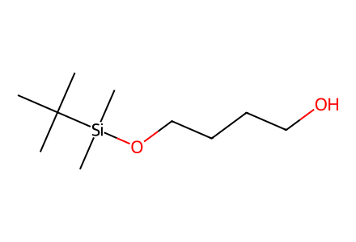
CC(C)(C)[Si](C)(C)OCCCCO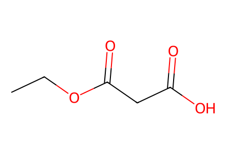
CCOC(=O)CC(=O)O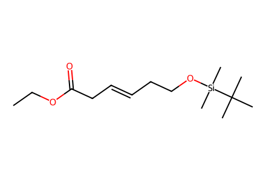
CCOC(=O)C/C=C/CCO[Si](C)(C)C(C)(C)C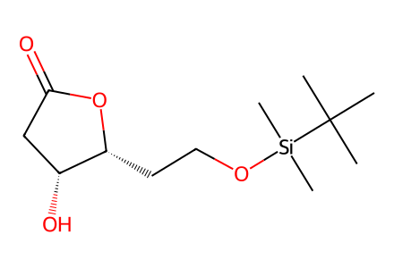
CC(C)(C)[Si](C)(C)OCC[C@H]1OC(=O)C[C@H]1O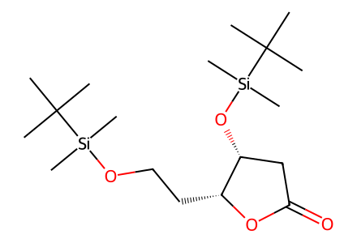
CC(C)(C)[Si](C)(C)OCC[C@H]1OC(=O)C[C@H]1O[Si](C)(C)C(C)(C)C
C#CCO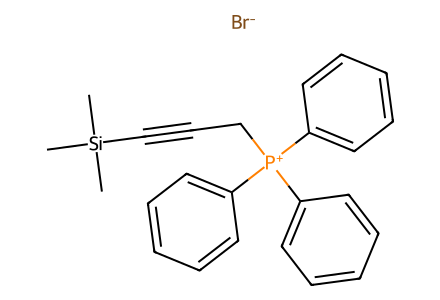
C[Si](C)(C)C#CC[P+](c1ccccc1)(c1ccccc1)c1ccccc1.[Br-]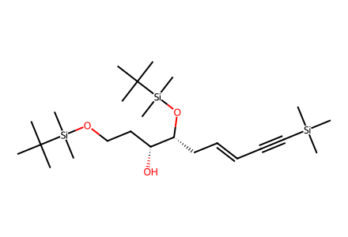
CC(C)(C)[Si](C)(C)OCC[C@@H](O)[C@@H](C/C=C/C#C[Si](C)(C)C)O[Si](C)(C)C(C)(C)C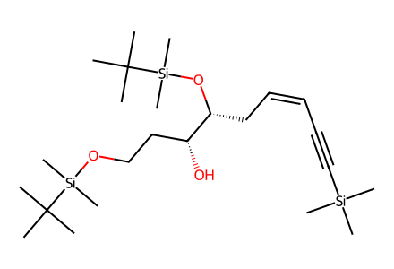
CC(C)(C)[Si](C)(C)OCC[C@@H](O)[C@@H](C/C=C\C#C[Si](C)(C)C)O[Si](C)(C)C(C)(C)C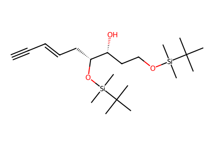
C#C/C=C/C[C@@H](O[Si](C)(C)C(C)(C)C)[C@H](O)CCO[Si](C)(C)C(C)(C)C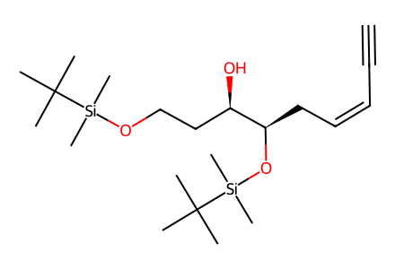
C#C/C=C\C[C@@H](O[Si](C)(C)C(C)(C)C)[C@H](O)CCO[Si](C)(C)C(C)(C)C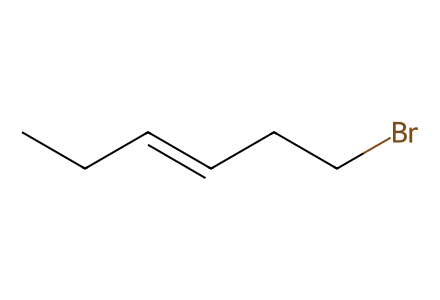
CC/C=C/CCBr
CC/C=C/CC[P+](c1ccccc1)(c1ccccc1)c1ccccc1.[Br-]
CC/C=C/CC[P+](c1ccccc1)(c1ccccc1)c1ccccc1.[I-]
CCOC(=O)C=P(c1ccccc1)(c1ccccc1)c1ccccc1
C#[C][Mg][Br]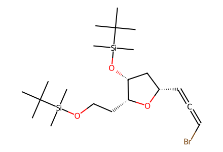
CC(C)(C)[Si](C)(C)OCC[C@H]1O[C@@H](C=C=CBr)C[C@H]1O[Si](C)(C)C(C)(C)C
CC(C)(C)[Si](C)(C)OCC[C@H]1O[C@@H](C=C=CBr)C[C@H]1O[Si](C)(C)C(C)(C)C
OCC[C@H]1O[C@@H](C=C=CBr)C[C@H]1O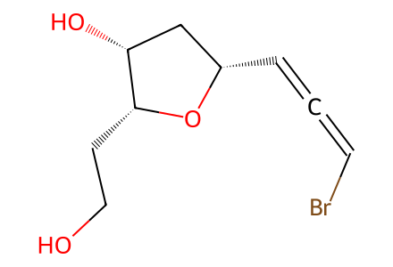
OCC[C@H]1O[C@@H](C=C=CBr)C[C@H]1O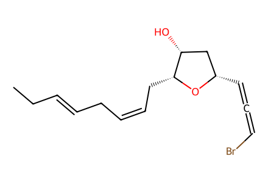
CC/C=C/C/C=C\C[C@H]1O[C@@H](C=C=CBr)C[C@H]1O
CC/C=C/C/C=C\C[C@H]1O[C@@H](C=C=CBr)C[C@H]1O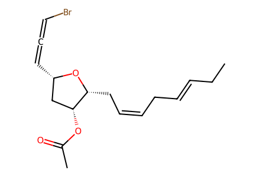
CC/C=C/C/C=C\C[C@H]1O[C@@H](C=C=CBr)C[C@H]1OC(C)=O
CC/C=C/C/C=C\C[C@H]1O[C@@H](C=C=CBr)C[C@H]1OC(C)=O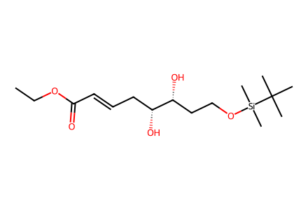
CCOC(=O)/C=C/C[C@@H](O)[C@H](O)CCO[Si](C)(C)C(C)(C)C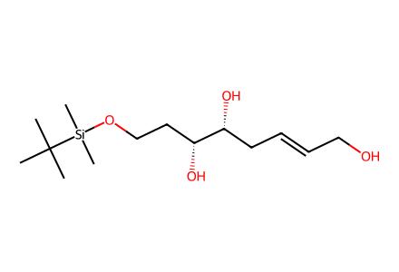
CC(C)(C)[Si](C)(C)OCC[C@@H](O)[C@H](O)C/C=C/CO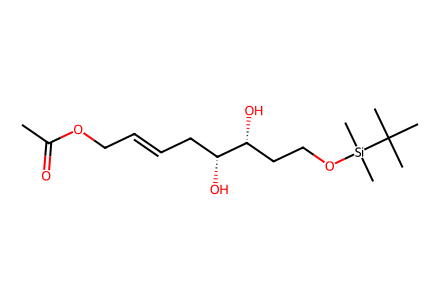
CC(=O)OC/C=C/C[C@@H](O)[C@H](O)CCO[Si](C)(C)C(C)(C)C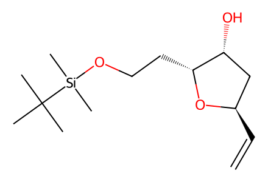
C=C[C@@H]1C[C@@H](O)[C@@H](CCO[Si](C)(C)C(C)(C)C)O1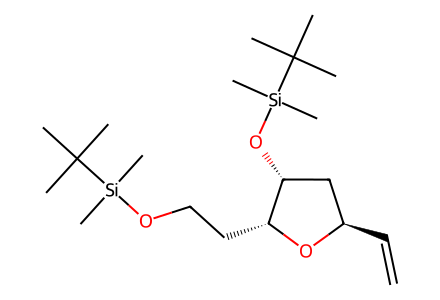
C=C[C@@H]1C[C@@H](O[Si](C)(C)C(C)(C)C)[C@@H](CCO[Si](C)(C)C(C)(C)C)O1
C#CC(O)[C@@H]1C[C@@H](O[Si](C)(C)C(C)(C)C)[C@@H](CCO[Si](C)(C)C(C)(C)C)O1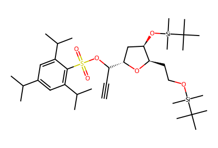
C#CC(OS(=O)(=O)c1c(C(C)C)cc(C(C)C)cc1C(C)C)[C@@H]1C[C@@H](O[Si](C)(C)C(C)(C)C)[C@@H](CCO[Si](C)(C)C(C)(C)C)O1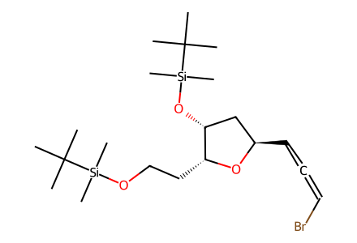
CC(C)(C)[Si](C)(C)OCC[C@H]1O[C@H](C=C=CBr)C[C@H]1O[Si](C)(C)C(C)(C)C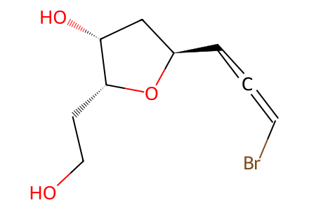
OCC[C@H]1O[C@H](C=C=CBr)C[C@H]1O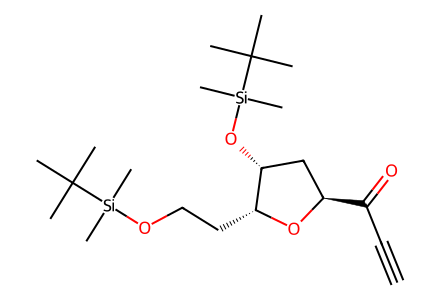
C#CC(=O)[C@@H]1C[C@@H](O[Si](C)(C)C(C)(C)C)[C@@H](CCO[Si](C)(C)C(C)(C)C)O1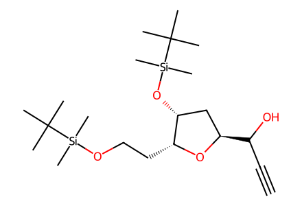
C#CC(O)[C@@H]1C[C@@H](O[Si](C)(C)C(C)(C)C)[C@@H](CCO[Si](C)(C)C(C)(C)C)O1
C#CC(OS(=O)(=O)c1c(C(C)C)cc(C(C)C)cc1C(C)C)[C@@H]1C[C@@H](O[Si](C)(C)C(C)(C)C)[C@@H](CCO[Si](C)(C)C(C)(C)C)O1
CC(C)(C)[Si](C)(C)OCC[C@H]1O[C@H](C=C=CBr)C[C@H]1O[Si](C)(C)C(C)(C)C
OCC[C@H]1O[C@H](C=C=CBr)C[C@H]1O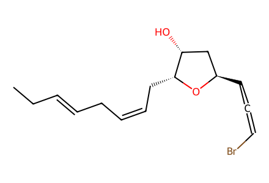
CC/C=C/C/C=C\C[C@H]1O[C@H](C=C=CBr)C[C@H]1O
CC/C=C/C/C=C\C[C@H]1O[C@H](C=C=CBr)C[C@H]1O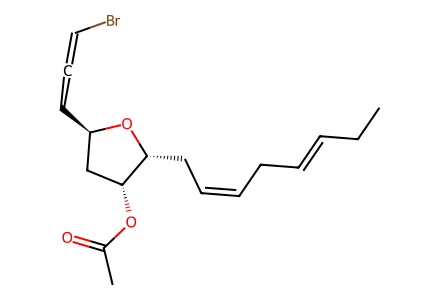
CC/C=C/C/C=C\C[C@H]1O[C@H](C=C=CBr)C[C@H]1OC(C)=O
CC/C=C/C/C=C\C[C@H]1O[C@H](C=C=CBr)C[C@H]1OC(C)=O